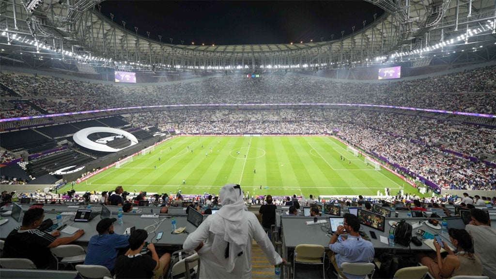
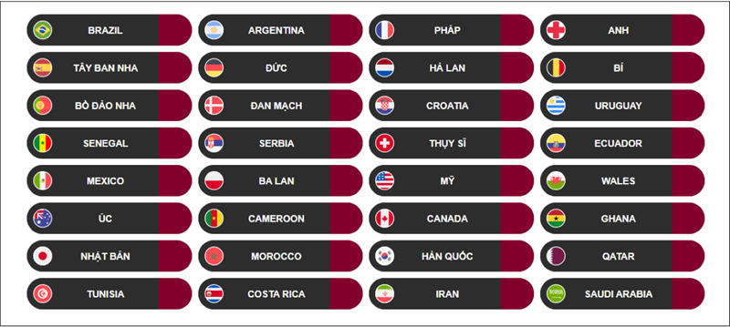

TIN TỨC GIÀY & BÓNG ĐÁ
Giải vô địch bóng đá thế giới 2022 (World Cup 2022)
Giải vô địch bóng đá thế giới 2022 (hay Cúp bóng đá thế giới 2022, tiếng Anh: 2022 FIFA World Cup, tiếng Ả Rập: كأس العالم لكرة القدم 2022) là giải vô địch bóng đá thế giới lần thứ 22 và được tổ chức ở Qatar. Vòng chung kết diễn ra với sự tham gia của 32 đội tuyển bóng đá quốc gia bao gồm cả đội chủ nhà Qatar. Đây là kỳ World Cup thứ 2 được tổ chức tại châu Á (sau kỳ World Cup 2002 được tổ chức ở Nhật Bản và Hàn Quốc), và là lần đầu tiên được tổ chức tại một quốc gia thuộc Trung Đông, thuộc Tây Á và thuộc vùng Thế giới Ả Rập. Đây cũng là lần cuối cùng giải đấu có 32 đội tham dự, khi số đội góp mặt sẽ được tăng lên 48 vào giải đấu năm 2026. Ban đầu giải đấu diễn ra vào mùa hè (tức tháng 6 và tháng 7 theo thông lệ), tuy nhiên nhiệt độ vào mùa hè ở Qatar thường nóng hơn 40°C. Vì vậy thời tiết nóng bức sẽ làm ảnh hưởng đến sức khỏe của các cầu thủ cũng như các cổ động viên, nên vào ngày 20 tháng 3 năm 2018, Liên đoàn Bóng đá Quốc tế (FIFA) chính thức đưa ra quyết định dời giải đấu sang mùa đông (lần đầu tiên trong lịch sử các vòng chung kết World Cup).[1] Giải đấu sẽ diễn ra từ ngày 20 tháng 11. Trận chung kết diễn ra vào ngày 18 tháng 12 năm 2022, trùng với ngày quốc khánh của Qatar. Vòng chung kết giải chỉ diễn ra trong 29 ngày thay vì 32 ngày như các giải đấu trước đây.[2] Pháp là đương kim vô địch của giải đấu sau khi giành chức vô địch lần thứ hai vào năm 2018.[3]

Chọn Quốc gia chủ nhà WC2022 :
Các thủ tục đấu thầu để đăng cai World Cup 2018 và 2022 bắt đầu vào tháng 1 năm 2009, và các hiệp hội quốc gia có đến ngày 2 tháng 2 năm 2009 để đăng ký làm chủ nhà.[4][5] Ban đầu, 11 hồ sơ dự thầu cho FIFA World Cup 2018 đã được đưa ra, nhưng Mexico sau đó đã rút lui, và hồ sơ dự thầu của Indonesia đã bị FIFA từ chối vào tháng 2 năm 2010 sau khi Hiệp hội bóng đá Indonesia không gửi được thư Chính phủ Indonesia bảo lãnh để hỗ trợ đấu thầu.[6] Các quan chức Indonesia đã không loại trừ một cuộc đấu thầu cho FIFA World Cup 2026, cho đến khi Qatar làm chủ nhà năm 2022. Trong quá trình đấu thầu, tất cả các quốc gia không thuộc UEFA dần dần rút lại hồ sơ dự thầu năm 2018, do đó đảm bảo rằng một quốc gia UEFA sẽ đăng cai World Cup 2018 và do đó khiến các quốc gia UEFA không đủ điều kiện tham gia đấu thầu năm 2022. Cuối cùng, có 5 suất làm chủ nhà FIFA World Cup 2022: Úc, Nhật Bản, Qatar, Hàn Quốc và Mỹ. Ủy ban điều hành FIFA gồm 22 thành viên đã họp tại Zürich vào ngày 2 tháng 12 năm 2010 để bầu chọn đội chủ nhà của cả hai giải đấu. Hai thành viên ủy ban điều hành FIFA đã bị đình chỉ trước cuộc bỏ phiếu liên quan đến cáo buộc tham nhũng về phiếu bầu của họ. Quyết định tổ chức World Cup 2022 tại Qatar, vốn được đánh giá là có "rủi ro hoạt động cao", đã gây ra chỉ trích từ các nhà bình luận truyền thông. Quyết định này đã bị nhiều người chỉ trích là một phần của vụ bê bối tham nhũng của FIFA.[7] atar là quốc gia nhỏ nhất theo diện tích được trao đăng cai FIFA World Cup. Quốc gia nhỏ nhất theo diện tích tiếp theo là Thụy Sĩ, chủ nhà của FIFA World Cup 1954, lớn hơn Qatar gấp ba lần và chỉ cần 16 đội đăng cai thay vì 32 đội như hiện tại. Qatar cũng trở thành quốc gia thứ hai (không bao gồm Uruguay và Ý, chủ nhà của hai kỳ World Cup đầu tiên) được trao giải FIFA World Cup mặc dù chưa bao giờ đủ điều kiện tham dự các giải đấu World Cup trước đó, bằng chứng là Nhật Bản đã được trao quyền đồng đăng cai World Cup 2002 vào năm 1996 mà chưa bao giờ vượt qua vòng chung kết, dù sau đó họ đã vượt qua vòng loại World Cup 1998.
Các đội tham dự WC2022 :
Vòng loại Bài chi tiết: Vòng loại Giải vô địch bóng đá thế giới 2022 Sáu liên đoàn các châu lục của FIFA tổ chức các trận đấu vòng loại của riêng họ. Tất cả 211 đội tuyển bóng đá quốc gia thuộc các liên đoàn bóng đá thành viên của FIFA đều đủ tư cách tham gia vòng loại do sáu liên đoàn bóng đá các châu lục tổ chức. Qatar, với tư cách là chủ nhà, được đặc cách vượt qua vòng loại. Tuy nhiên, Qatar vẫn sẽ tham gia vòng loại thứ 2 khu vực châu Á để giành suất thi đấu cho Cúp bóng đá châu Á 2023. Do Qatar đã vượt qua vòng loại thứ hai với tư cách là đội nhất bảng, đội nhì bảng có thành tích tốt thứ 5 là Liban sẽ tham dự vòng loại thứ ba.[23] Lần đầu tiên kể từ sau 2 lần tổ chức giải đầu tiên vào các năm 1930 và 1934, World Cup sẽ được đăng cai tại một quốc gia mà đội tuyển bóng đá của quốc gia đó chưa bao giờ tham dự vòng chung kết trước đây.[24] Nhà đương kim vô địch, Pháp, cũng phải tham dự vòng loại như tất cả các đội tuyển khác.[25] Saint Lucia ban đầu tham dự vòng loại nhưng đã rút lui trước trận đấu đầu tiên. Triều Tiên rút khỏi vòng loại do lo ngại về an toàn liên quan đến đại dịch COVID-19. Samoa và Samoa thuộc Mỹ đều rút lui khỏi giải trước lễ bốc thăm vòng loại châu Đại Dương. Tonga rút lui sau vụ phun trào núi lửa Hunga Tonga 2022. Do sự bùng phát của COVID-19 trong các đội hình của họ, Vanuatu và Quần đảo Cook cũng đã rút lui vì các hạn chế đi lại. Việc phân bổ số đội tham dự vòng chung kết cho mỗi liên đoàn châu lục đã được Ủy ban Điều hành FIFA xem xét vào ngày 30 tháng 5 năm 2015 tại Zürich sau Đại hội FIFA.[26] Ủy ban đã quyết định rằng cách phân bổ tại giải đấu năm 2006, cũng như ba giải đấu tiếp theo vào các năm 2010, 2014 và 2018, sẽ được giữ nguyên ở giải đấu năm 2022:[27] CAF (Châu Phi): 5 AFC (Châu Á): 4,5 (không kể đội chủ nhà) UEFA (Châu Âu): 13 CONCACAF (Bắc, Trung Mỹ và vùng Caribe): 3,5 OFC (Châu Đại Dương): 0,5 CONMEBOL (Nam Mỹ): 4,5 Lễ bốc thăm chung cho vòng loại trước đó được dự kiến sẽ diễn ra vào tháng 7 năm 2019,[28] nhưng sau đó đã bị hủy để tạo điều kiện cho các liên đoàn châu lục tổ chức các lễ bốc thăm riêng cho vòng loại ở từng châu lục.[29] Trận đấu loại đầu tiên diễn ra tại vòng loại đầu tiên khu vực châu Á vào ngày 6 tháng 6 năm 2019; tại trận đấu này Mông Cổ đã giành chiến thắng 2-0 trước Brunei, với Norjmoogiin Tsedenbal (Mông Cổ) là cầu thủ đầu tiên ghi bàn tại vòng loại.[30] Vào ngày 9 tháng 12 năm 2019, Cơ quan Phòng chống Doping Thế giới (WADA) đã ra lệnh cấm Nga tham dự tất cả các sự kiện thể thao lớn trong vòng 4 năm, sau khi Cơ quan Phòng chống Doping Nga (RUSADA) bị phát hiện đã chuyển dữ liệu xét nghiệm giả cho các nhà điều tra.[31] Tuy nhiên, đội tuyển bóng đá quốc gia Nga vẫn có thể tham dự vòng loại, vì lệnh cấm này chỉ áp dụng cho vòng chung kết của các giải vô địch thế giới (của các môn thể thao). Nếu Nga vượt qua vòng loại, các cầu thủ Nga vẫn có khả năng được phép thi đấu tại giải với cờ và phù hiệu trung lập, trong khi chờ quyết định từ FIFA.
Tuy nhiên, bất cứ đội tuyển nào đại diện cho Nga, đồng thời sử dụng quốc kỳ và quốc ca của Nga, vẫn sẽ không được tham dự giải theo quyết định của WADA.[32] Quyết định này đã được kháng cáo lên Tòa án Trọng tài Thể thao (CAS),[33] tuy nhiên kể từ ngày 17 tháng 12 năm 2020, các đội tuyển đại diện cho Nga vẫn bị cấm thi đấu tại các giải vô địch thế giới được tổ chức hay cấp phép bới một cơ quan có thỏa thuận công tác với WADA cho đến ngày 16 tháng 12 năm 2022.[34] Do lo ngại về nắng nóng tại Qatar, các câu lạc bộ bóng đá hàng đầu ở châu Âu đã đề xuất tổ chức World Cup từ 28 tháng 4 đến 29 tháng 5, thay vì vào tháng 6 và tháng 7 như thường lệ.[35] Có 32 đội tuyển quốc gia đủ điều kiện tham dự vòng chung kết, trong đó có 24 đội đã từng thi đấu tại giải đấu trước đó vào năm 2018. Qatar sẽ là đội đầu tiên trong lịch sử tham dự vòng chung kết với tư cách đội chủ nhà ngay ở lần đầu góp mặt tại một kỳ World Cup kể từ Ý năm 1934. Do đó, giải đấu năm 2022 là kỳ World Cup đầu tiên mà không đội nào giành được suất tham dự vòng loại được ra mắt. Hà Lan, Ecuador, Ghana, Cameroon và Hoa Kỳ trở lại giải đấu sau khi vắng mặt vào năm 2018. Canada trở lại giải đấu sau 36 năm kể từ khi họ góp mặt lần cuối vào năm 1986.[36] Wales trở lại giải đấu sau 64 năm - một khoảng cách kỷ lục đối với một đội châu Âu, lần tham dự duy nhất trước đó của họ là vào năm 1958. Đội tuyển từng 4 lần vô địch và là nhà vô địch Euro 2020, Ý, không thể vượt qua vòng loại World Cup lần thứ hai liên tiếp lần đầu tiên trong lịch sử của họ, khi để thua trong trận bán kết vòng play-off khu vực châu Âu trước Bắc Macedonia.[37] Ý là nhà cựu vô địch duy nhất không vượt qua được vòng loại. Ý cũng là đội bóng thứ tư không thể vượt qua vòng loại World Cup sắp tới khi đã giành chức vô địch Euro trước đó, sau Tiệp Khắc năm 1978, Đan Mạch năm 1994 và Hy Lạp năm 2006.[38][39][A] Nước chủ nhà World Cup trước đó, Nga, bị cấm tham dự giải do chiến dịch quân sự của Nga nhắm vào Ukraina.[40] Chile, nhà vô địch 2 lần liên tiếp Copa América 2015 và 2016 cũng không thể vượt qua vòng loại lần thứ hai liên tiếp. Nigeria bị loại bởi Ghana bằng luật bàn thắng trên sân khách ở vòng 3 khu vực châu Phi, khi đã vượt qua vòng loại ở 3 kỳ World Cup liên tiếp trước đó và 6 trong số 7 kỳ gần nhất. Các đội vượt qua vòng loại World Cup 2018 như Ai Cập, Panama, Colombia, Peru, Iceland và Thụy Điển cũng không vượt qua vòng loại 2022.